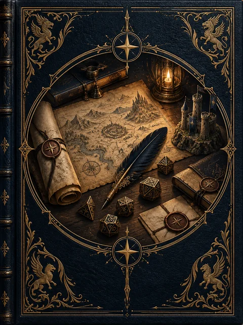

Biblioteca do Mestre
Os 18 capítulos completos: criação de campanhas, povos, facções, viagens, recompensas e condução de mesa.
Livro completo
assets/img/home/marca-valedria.webpUm refúgio para quem dá vida a Valédria. Prepare encontros memoráveis, descubra os bastidores das crônicas e encontre a próxima história da sua mesa.

Da primeira sessão às consequências de uma campanha inteira, reunido em um único lugar.
Acesse sua conta para abrir a biblioteca e preparar sua próxima sessão.
Acesso em preparação. Contas e assinaturas serão disponibilizadas no lançamento.
Uma conta pessoal para suas histórias. O acesso ao acervo depende de uma assinatura ativa.
Os 18 capítulos completos: criação de campanhas, povos, facções, viagens, recompensas e condução de mesa.
Livro completoA crônica de Amieiro e seis aventuras com pistas, personagens, conflitos e caminhos que se adaptam às escolhas do grupo.
Crônicas e aventurasGere personagens, rumores, encontros e situações quando a mesa seguir por uma estrada inesperada.
4 geradoresOrganize cenas, pistas e consequências. Salve suas anotações neste navegador e exporte uma cópia para guardar.
Preparação e continuidadeA biblioteca, as aventuras e as ferramentas estarão reunidas em uma única assinatura. Os planos e valores serão anunciados no lançamento.
O Livro do Mestre completo, os bastidores das crônicas, as seis aventuras preparadas para condução e as ferramentas desta área. As páginas públicas continuam apresentando o mundo aos jogadores sem revelar as surpresas das aventuras.
O acesso do Mestre é destinado ao conteúdo de preparação e condução. A ficha de personagem e os demais livros públicos continuam disponíveis no site.
Quando as contas estiverem disponíveis, use “Esqueci minha senha” e informe o e-mail cadastrado para receber as instruções de recuperação. Nunca envie sua senha para outra pessoa.
O caderno guarda as anotações no navegador usado, separadas por conta. Exporte uma cópia antes de trocar de aparelho ou limpar os dados do navegador. A sincronização entre aparelhos não está incluída nesta versão.
Esta conta ainda não possui acesso ativo. Quando as assinaturas estiverem disponíveis, você poderá ativar seu acesso aqui.
Use a ideia como ponto de partida e adapte à história do grupo.
Salvo neste navegador, nesta conta. Exporte uma cópia para levar a outro aparelho.